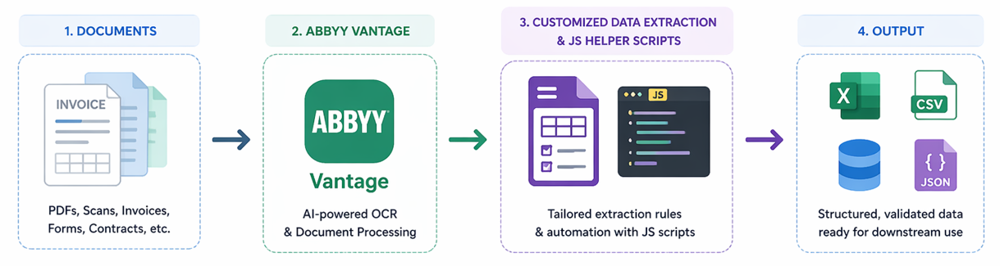
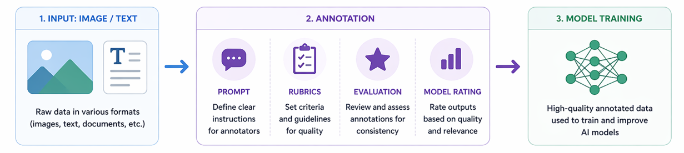

Projects & Work
Automated Document Data Extraction
- Developed an automated document processing workflow using ABBYY Vantage
- Extracted and structured key data fields from unstructured documents
- Improved efficiency by reducing manual data entry

Twenty2020: Anti-eye strain in-browser tool
- Built a lightweight web-based productivity tool to help mitigate eye strain
- Implemented frontend UI and backend logic for data handling
- Focused on usability and simple, clean and responsive design

Data Annotation for Multi-Modal AI
- Worked on annotating and structuring data for AI model training
- Contributed to improving dataset quality for multimodal systems
- Gained experience with data pipelines and AI workflows
